OTIUM is the practice of deliberate leisure. In the classical sense, otium is not escape from work but time when attention returns to memory, landscape, and thought — without a utilitarian deadline.
We shape routes for lingering, not for checklist tourism. The goal is presence in a place rather than consumption of sights.
OTIUM is not a tour operator. It is an invitation to walk, pause, and leave a route unfinished if the light on a façade deserves another minute.
Historical and reference coats of arms
Singapore
Guide. Places in this edition: 27.
Trip ideas
One day
A compact loop linking the strongest cards in this guide, ordered to minimise backtracking on foot.
Address: Empress Place | Style: Neoclassical civic palace | Period: 1867 building; museum 1997
Riverfront galleries on trade, faith, and design linking Singapore to wider Asian regions. Friday evenings often extend hours with performances. Boat quay bars sit one block south along the walk.
Government offices became a thematic museum as the civic district pedestrianised. Curatorial anchor for multicultural origin stories.
Rooftop orchid garden and Buddhist culture museum below prayer halls with processions on feast days. Modest dress enforced for upper relic chamber. Maxwell Food Centre sits behind for hawker contrast.
Built to enshrine a tooth relic tradition brought from Myanmar networks. Chinatown's monumental modern temple counterweight to shophouse density.
Souvenir arcades and hawker stalls under lanterns between temple gates and boutique hotels. Mid-Autumn festival hangs dense lantern canopies. Heritage centre explains migration waves in air-conditioned galleries.
Conservation gating balanced tourism with resident temple life. Densest pedestrian retail in historic Chinatown.
Clarke Quay
Address: Singapore River | Style: Colourful shed roofs over dining strip | Period: 19th c. warehouses; 2003 riverside redevelopment
Riverfront dining and nightlife in restored godowns, linked by pedestrian bridges to Boat Quay upstream. River taxis connect to Marina Bay Sands without road traffic. Bungee-style swings operate from a tall riverside rig for thrill seekers.
Named for Governor Clarke; warehouses turned into clubs after clean-up of the Singapore River campaign. Evening temperature drop makes this a social heat sink for visitors.
Esplanade Theatres
Style: Contemporary | Period: 2002
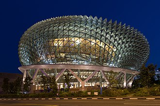
The Esplanade Theatres by the Bay is a world-class performing arts center located on Marina Bay Sands Promenade, Singapore. Completed in 2002, it has become one of the most iconic landmarks in the city-state. It features two main performance spaces: the Concert Hall and the Drama Theatre. Its unique roof design allows natural light to filter into the interior spaces during daytime performances. The theater complex includes the Esplanade Gallery, offering art exhibitions and educational programs. Since opening, the Esplanade has won several architectural awards globally. Marina Bay Sands, adjacent to the Esplanade, provides panoramic views of the theater.
Designed by DP Architects and built between 1998 and 2002, the Esplanade was intended to serve as a cultural hub for Singapore. It showcases innovative architecture with its distinctive twin-theater design and stunning cantilevered roof structure. The venue has hosted numerous international performances, including concerts, plays, and dance shows. Visitors should experience the Esplanade due to its breathtaking architecture and diverse programming that reflects Singapore's multicultural heritage.
Fort Canning Park
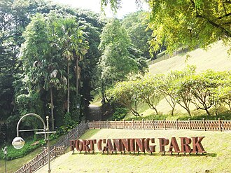
Fort Canning Hill — park in Singapore.
Gardens by the Bay
Address: Marina South | Style: Biome conservatories; supertree grove | Period: 2012 phased opening
Supertree grove light shows, Cloud Forest dome, and Flower Dome seasonal displays on reclaimed waterfront land. OCBC Skyway tickets sell out before garden rhapsody times. Cooled conservatories offer relief from equatorial humidity.
Part of Marina Bay's land reclamation strategy to add green tourism capacity beside the financial core. Singapore's flagship hortitecture attraction.
Gardens by the Bay Supertree Grove
Address: Marina South | Style: Steel vertical gardens with canopy walk | Period: 2012
Evening light shows on tree-like towers with OCBC Skyway tickets above succulents. Cloud Forest dome sits west for cooled mist walks. Marina Barrage kite flyers appear on breezy Sundays upstream.
National gardens strategy reclaimed land into horticultural tourism capacity. Night skyline choreography facing the financial towers.
Haw Par Villa
Address: Pasir Panjang | Style: Chinese moral tale dioramas in outdoor park | Period: 1937 theme park; restored dioramas
Surreal sculpture park illustrating Chinese folklore and morality tales—ten courts of hell section is graphic but famous. Free admission makes it a budget-friendly counterpoint to Marina attractions. Mosquito repellent helps on humid afternoons under trees.
Aw family built Tiger Balm fortune into this educational garden; state took over management in later decades. Weird heritage slice rarely duplicated elsewhere in Southeast Asia.
Henderson Waves
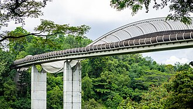
Along with Alexandra Arch, the bridge is one of two pedestrian bridges that form part of the walking trail connecting the Southern Ridges with Mount Faber, and is the highest pedestrian bridge in Singapore. The sun-shading, curved, wooden ribs are illuminated at night.
Jewel Changi Airport
Style: Contemporary architecture with elements of nature integration | Period: 2011
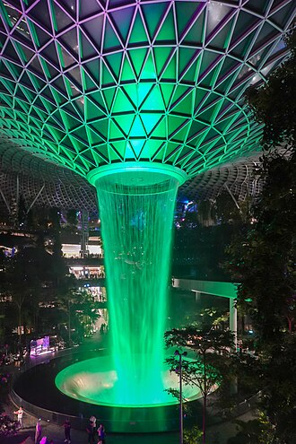
Located within Singapore's Changi Airport, Jewel Changi is a modern shopping and entertainment complex that seamlessly integrates with the airport's infrastructure. It offers a unique blend of retail spaces, dining options, and attractions. It houses the world's tallest indoor waterfall, measuring over 30 meters high. The Skyway offers panoramic views of the airport runways and surrounding landscape. Visitors can explore the Rain Vortex—a unique feature where water flows through a glass tube and sprays into the air. Jewel Changi boasts a variety of restaurants and cafes, including international cuisine options. The terminal also includes a butterfly garden showcasing colorful tropical species.
Opened in 2011, Jewel Changi was designed to enhance the travel experience for both passengers and visitors. The structure features an iconic atrium known as the Skyway, which connects various levels of the complex and provides stunning views of the airport’s runways below. Jewel Changi stands out as one of the most innovative airport terminals, offering visitors a place to relax, shop, dine, and enjoy breathtaking architecture while waiting for their flights.
Little India Serangoon
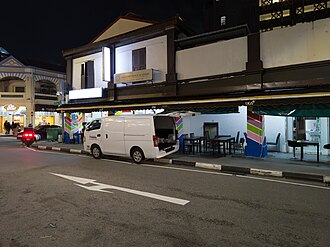
Little India is a vibrant neighborhood known for its colorful streets, temples, and traditional shops. Located along Jalan Bukit Merah and Serangoon Road, it offers a unique cultural experience that reflects Singapore's multicultural heritage. It is home to several notable Hindu temples including Sri Veeramakaliamman Temple and Sri Thamarai Selvam Temple. The district hosts annual festivals such as Deepavali (Diwali), celebrating Indian culture and traditions. Serangoon Road is lined with colorful shops and street stalls offering a wide range of products. Little India also features art galleries showcasing contemporary Indian art and craftsmanship. The area is easily accessible via public transport, making it convenient for tourists.
Originally developed as a residential area for Indian immigrants during the early 20th century, Little India has evolved into one of the city's most iconic districts. The neighborhood became famous for its markets selling spices, fabrics, and handicrafts, attracting visitors from around the world. Visitors come to Little India to immerse themselves in the rich cultural atmosphere, explore local cuisine, and shop for souvenirs and authentic Indian goods.
MacRitchie Reservoir
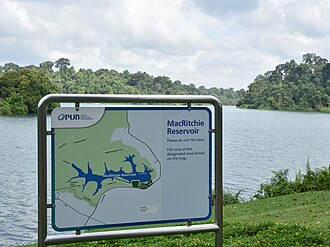
MacRitchie Reservoir is a serene oasis in the heart of Singapore, offering visitors a chance to escape the urban bustle. This picturesque park features a scenic reservoir surrounded by lush greenery, walking trails, and a rich diversity of flora and fauna. It is a popular spot for outdoor enthusiasts, joggers, and nature lovers looking to explore the beauty of Singapore's natural landscape. MacRitchie Reservoir was Singapore's first reservoir, completed in 1868. The reservoir covers an area of approximately 2.5 square kilometers. The TreeTop Walk, a suspension bridge that offers panoramic views of the forest, was opened in 2004.
MacRitchie Reservoir was completed in 1868 and is Singapore's oldest reservoir. Originally built to provide a reliable water supply for the growing population, it has undergone several expansions and improvements over the years, including the construction of the iconic TreeTop Walk, which opened in 2004. Culturally, MacRitchie Reservoir is an integral part of Singapore's commitment to preserving its natural heritage amidst urban development. It serves as a recreational hub for the community, promoting outdoor activities and environmental awareness. The reservoir is also part of the larger Central Catchment Nature Reserve, which plays a crucial role in the conservation of Singapore's biodiversity.
Marina Bay Sands
Address: Marina Bay | Style: Integrated resort; three towers with sky park | Period: 2010
Resort complex with museum, mall, convention centre, and cantilevered SkyPark pool deck visible from bay viewpoints. Spectra light show plays in the event plaza below the towers. SkyPark observation tickets are timed at peak sunset hours.
Moshe Safdie's design became Singapore's post-2010 skyline signature across from the financial district. Anchor of the Marina Bay leisure cluster with Gardens by the Bay.
Merlion Park
Address: One Fullerton waterfront | Style: Symbol sculpture (lion-fish) | Period: 1972 statue; relocated 2002
Merlion fountain facing Marina Bay—tourist icon referencing Singapore's fishing-village past and 'lion city' name. Night crowds compete for tripod space during Marina laser shows. Smaller merlion statues exist elsewhere on the island.
Designed by Fraser Brunner as a Singapore Tourism Board symbol; the current site improves harbour sightlines. Mandatory photo stop framing the bay skyline.
National Gallery Singapore
Address: St Andrew's Road | Style: Neoclassical civic buildings linked by bridge | Period: 2015 union of City Hall and former Supreme Court
Southeast Asian modern art across linked courtyards and rooftop sculpture fields. Colonial courtrooms host rotating installations. Smokehouse cafés sit under the glass link bridges.
Two national monuments merged into one climate-controlled museum circuit. Largest public display of Singapore and regional modernism.
Orchard Road
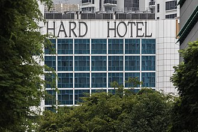
Orchard Road — boulevard that is the retail and entertainment hub of Singapore.
Peranakan Museum
Style: Colonial-era architecture | Period: 2006
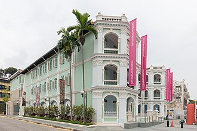
Discover the fascinating heritage of Singapore's Peranakan culture at the Peranakan Museum. Located in a restored colonial mansion, this museum showcases the unique blend of Malay, Chinese, and European influences that shaped the identity of the Peranakans. Located within the historic district of Kampong Galor, the museum offers a glimpse into the vibrant past of Singapore’s multicultural society. Exhibitions include artifacts, furniture, and decorative items reflecting the fusion of cultures. The museum also hosts temporary exhibitions highlighting various aspects of Peranakan life and history. Visitors can learn about the social status and lifestyle of the Peranakan community through interactive displays and multimedia presentations. The museum provides guided tours for groups, offering deeper insights into the exhibits.
The Peranakan Museum was established in 2006 to preserve and promote the cultural legacy of the Straits-born descendants of Chinese immigrants who married local Malays. The museum is housed in a beautifully restored 19th-century mansion, which itself is a testament to the architectural styles prevalent during that era. Visit the Peranakan Museum to explore the colorful traditions, customs, and craftsmanship of the Peranakan people, including their distinctive clothing, jewelry, and culinary arts.
Sentosa Island
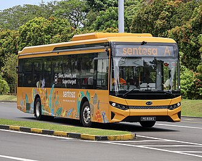
Sentosa — island off the south coast of the main island of Singapore.
Singapore Botanic Gardens
Address: Tanglin | Style: Tropical landscape and glasshouses | Period: 1859; UNESCO core 2015
National orchid garden hybrids and lakeside concert lawns on the MRT Circle Line stop. Early hours beat equatorial humidity in the rainforest valley. Symphony stage hosts weekend classical picnics.
Rubber experiments here spread across colonial plantations; later eras emphasised public leisure. UNESCO site rare for a tropical botanic institution.
Singapore Flyer
Period: 2008
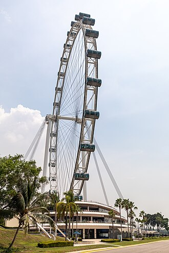
The Singapore Flyer is a giant observation wheel located at Marina Bay Sands, offering panoramic views of the city and its iconic skyline. At 165 meters tall, it is the tallest observation wheel in the Southern Hemisphere. It has 28 air-conditioned capsules that can accommodate up to 28 passengers each. Each capsule offers 360-degree views during a 30-minute ride. The ride takes approximately 30 minutes per rotation, providing ample time for sightseeing. Nighttime illumination enhances the Flyer's appearance with colorful LED lights.
Opened in 2008, the Singapore Flyer was designed by Atkins Global and built by ThyssenKrupp Elevator. It stands as Southeast Asia's largest observation wheel, surpassing London Eye in size. Visitors can enjoy breathtaking vistas of Marina Bay, Sentosa Island, and the central business district while learning about Singapore’s rich heritage and modern development.
Bumboats and lit façades linking Clarke Quay nightlife to civic district bridges. River taxis beat road detours during F1 road closures. Cavenagh Bridge marks the civic end of the walk.
Clean-up campaigns removed polluting trades before glass towers framed both banks. Cooling breezes for evening dining after Marina heat.
Singapore Zoo
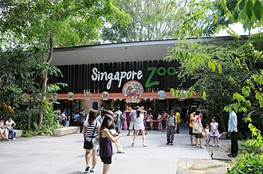
The Singapore Zoo is a world-renowned wildlife park that offers visitors an immersive experience with over 2,800 animals from around the globe. Set in a lush rainforest environment, the zoo emphasizes naturalistic habitats and conservation efforts. Guests can enjoy various interactive exhibits and programs, making it a perfect destination for families and animal lovers alike. The Singapore Zoo is home to over 2,800 animals representing more than 300 species. It was the first zoo to implement an open concept design, allowing animals to live in environments that mimic their natural habitats.
Opened in 1973, the Singapore Zoo was established to promote wildlife conservation and education. It was the first zoo in the world to feature an open concept, allowing animals to roam in environments that closely resemble their natural habitats. Over the years, the zoo has expanded its facilities and introduced various conservation programs. Culturally, the Singapore Zoo plays a crucial role in promoting awareness about wildlife conservation and environmental sustainability. It is a popular attraction for both locals and tourists, contributing to Singapore's reputation as a city that values nature and biodiversity. The zoo also participates in international conservation efforts, reflecting Singapore's commitment to global environmental issues.
St Andrew's Cathedral
Style: Gothic Revival | Period: 1835–1840
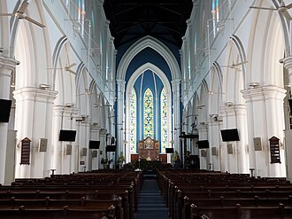
Perched high on Fort Canning Hill, St Andrew's Cathedral is a soaring Gothic Revival structure that dominates the skyline of Singapore’s central district. Its spire reaches for the heavens, offering panoramic views across the city. The cathedral's towering spire stands at 67 meters tall. It features stained glass windows imported from England. St Andrew's Cathedral hosts weekly services and special events. Its interior boasts intricate wood carvings and ornate furnishings. The cathedral is open daily for visitors.
Built between 1835 and 1840, St Andrew's Cathedral was commissioned by Governor Sir Stamford Raffles to serve as the seat of the Anglican Church in Singapore. It has been a significant spiritual hub since its opening, hosting important religious ceremonies and commemorations over the years. Visitors come here to appreciate its architectural beauty and historical significance, as well as to enjoy the breathtaking vistas it offers.
Sultan Mosque
Style: Moorish-Malay | Period: 1822–1826
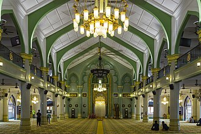
The Sultan Mosque is Singapore's oldest mosque and a significant landmark of Islamic heritage. Located on Keppel Road, it was built during the late 19th century as a place for worshippers to gather and celebrate their faith. It is one of the few remaining historic mosques in Singapore dating back to colonial times. The mosque underwent major renovations in 1974 to preserve its original appearance. Its architecture reflects a blend of Moorish and Malay styles typical of Southeast Asia. Services at the mosque are conducted daily with special prayers held on Fridays. Locals and tourists alike often visit the mosque for its peaceful atmosphere and historical significance.
Constructed around 1822–1826 by Arab traders and local Muslims, the Sultan Mosque served as a focal point for religious activities within the early Malay community. It has been restored several times over the years but retains its traditional architectural style influenced by Middle Eastern designs. The mosque’s minaret and domes are notable features that make it easily recognizable. Visiting the Sultan Mosque provides insight into Singapore's rich cultural diversity and historical development.
Thian Hock Keng Temple
Style: Traditional Hokkien | Period: 1840s
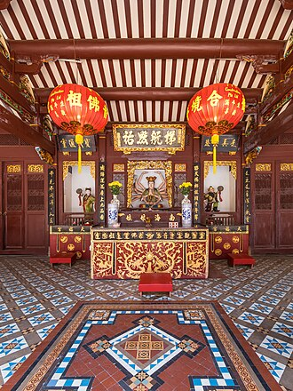
Step into Singapore's cultural heart at Thian Hock Keng Temple, a solemn and serene sanctuary dedicated to the goddess Tua Pek Kong. It was constructed during the British colonial era, making it one of the oldest surviving temples in Singapore. The temple's name translates to 'Heavenly Altar of Amoy', reflecting its origins in the Amoy region of China. Its colorful murals depict scenes from Chinese mythology and legends. Today, Thian Hock Keng is listed as a National Monument and UNESCO World Heritage Site. Visitors can explore the temple's interior, which features ornate furnishings and traditional altar arrangements.
Built in 1840s, Thian Hock Keng was the first Chinese temple in Singapore, serving as a spiritual hub for early Chinese settlers. Its architecture reflects traditional Hokkien style with intricate carvings and decorative elements inspired by Chinese folklore. This temple is significant for its historical importance as a symbol of Chinese heritage and community unity.
Woodneuk Palace
Style: Contemporary | Period: [insert year built]
Located within the bustling heart of Singapore's shopping district, Woodneuk Palace is a modern landmark that stands out for its unique architecture and vibrant atmosphere. This elegant structure serves as both a cultural hub and a popular gathering spot for locals and tourists alike. Opened in [insert year], Woodneuk Palace has become one of the most recognized symbols of modern Singaporean architecture. The interior features state-of-the-art amenities including a multi-purpose performance hall, restaurants, and retail spaces. Its exterior boasts a striking glass facade with intricate geometric patterns inspired by traditional Asian motifs. Regularly hosting cultural festivals and events, Woodneuk Palace plays a significant role in promoting local arts and heritage. It offers panoramic views of the city from its rooftop terrace.
Constructed during the late 20th century, Woodneuk Palace was originally designed to complement the surrounding urban landscape while providing a space for entertainment, dining, and relaxation. Its sleek design incorporates elements of contemporary art and architecture, making it a standout addition to the city's skyline. Visitors come here to experience the fusion of culture, cuisine, and style, enjoying performances, exhibitions, and culinary delights amidst the soothing ambiance of this iconic building.